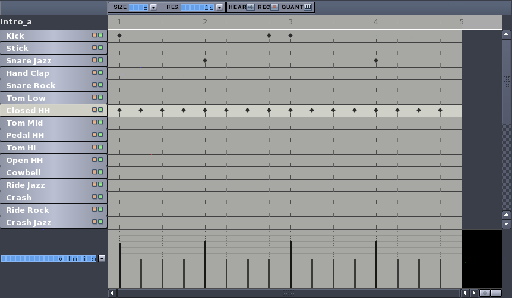
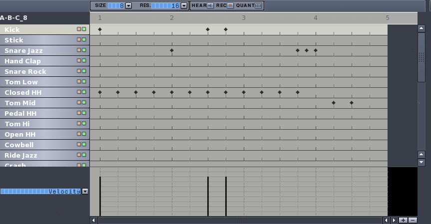
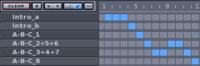
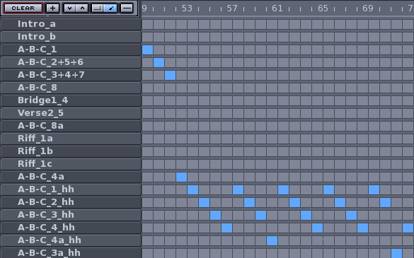

Hydrogen Tutorial
Antonio Piraino
You've just downloaded the latest version of Hydrogen and have it installed successfully. Hydrogen may come in handy for these tasks:
- It can be used as an advanced "click" machine helping you practicing (in speed, precision and rudiments) drums, maybe with a custom pattern you wrote.
- You want to learn how to properly play a song: you can "write it down" inside Hydrogen (or just a few difficult parts of it). Doing the effort of finding, splitting and reproducing the different parts of the songs will improve your understanding of it. Also, using Hydrogen with your songs will ensure that in future a quick glance at the songfile you have created will bring the song up immediately to mind.
- You can play H2 with other software (Ardour, ...)
This simple tutorial will guide you creating a complete song. We will work on "Georgy Porgy" of Toto which has a quite straight structure (therefore appropriate for a guide such as this) but this doesn't mean the song is actually easy to write down since the drummer (Jeff Porcaro) enriches the groove with his personal touch and fantasy. Remember that Hydrogen will not play better than the drummer working on the song since most of the task must be accomplished by the programmer's sensibility and experience.
Table of contents
Let's start
Before starting make sure you have a few things:
- The song to study on: either an audio-cd or (better) an .ogg or .mp3 for optimal flexibility.
- Optionally a rough layout of the song on paper: it may be useful to count bars and different parts of the song that eventually wii get into Hydrogen.
The song we will work on has the following structure:
- Intro: 4 bars
- Verse: 8 bars
- Bridge: 8 bars
- Verse: 8 bars
- Bridge: 8 bars
- Chorus: 8 bars
- Riff: 4 bars
- Verse (with guitar): 8 bars
- Verse (with voice): 8 bars
- Bridge: 8 bars
- Chorus: 8 bars
- Chorus: 8 bars
- Chorus: 8 bars
- Final Riff: 4 bars
Looking at this scheme we can see that some pattern repeats, so we'll use this symbols in Hydrogen's Song Editor:
- Verse -> A
- Bridge -> B
- Chorus -> C
And to save up words on explainations we'll use two common TLA (Three Letters Acronym ^_^):
- LMB: left mouse button
- RMB: right mouse button
Well, now unplug your phone and launch Hydrogen from the shell: let's get to work!
Intro
The base pattern (Fig. 1 and 2) is 4 bars long (divided in 2 different bars, each repeated 2 times, so it's [2a*2]+[2b*2]) and lasts for the whole song, from the beginning to the end, riff included; most of the time (intro and riff excluded) this base pattern is repeated 2 times to reach the commonly used 8 bars for each part of the song (A,B,C).
Before starting let's set the speed to 98bpm (HINT HINT you can find out by yourself the speed of the song while playing it with your favourite media player and following the rhythm by clicking repeatedly the backslash key in Hydrogen) and from the menu "Grid Resolution" let's set '16'.
To create a new pattern select the instrument "Closed HH", click on RMB and choose "Fill Notes": the first two bars will be filled up. Then insert manually the beats on Snare Jazz and Kick as indicated in the 2 pictures below and there we have the base pattern for our song. Note how the beats on the hi-hat have different velocity: beats falling on the beginning of the bar are set around at 75% of the full velocity bar, the others around at half of it, in order to give groove the song.
Fig. x - Base pattern, first bar

Fig. x - Base pattern, second bar

Before we start writing down verses there are 4 intro bars, all equals to each other, except for the last one which at the end has an open hi-hat. We should do then:
- Rename the first pattern in the Song Editor with RMB click on the name "Empty Pattern" and change it to "intro_a", for example.
- Add two new patterns near the first one (second and third bars)
- Create in Pattern Editor the base pattern (Fig. 1)
For the fourth bar we'll instead open the hi-hat (Fig. 3):
- RMB in Song Editor on the newly created pattern, choose "copy", then choose a name (ex. "intro_b") and automagically you will have a new one right under.
- Select the pattern you've just created (IMPORTANT!)
- Delete the last 2 beats of "Closed HH" and move them on "Open HH".
- Select '32' from "Grid Resolution" and add another 2 beats right near the previous ones.
- Adjust the velocity of these 4 beats so that the first is around 75% while the other three are at 25% to simulate a longer opening.
Fig. x - Intro detail, fourth bar.

First verse
Since we have written the base pattern, now we should already know the basis. To create the first verse we just have to copy from the Song Editor the pattern "intro_a" and rename, say, to "A-B-C_1", because it is the first bar of the verse that eventually will also fit for the bridge (B) and the chorus (C).
Pay attention, why can't we just add two new more patterns next to this? Because in the first bar there is a "Crash" beat which ends the previous intro, therefore the two bars are not completely equal; you have to copy the pattern "A-B-C_1" and rename it to "A-B-C_2", cutting the "Crash" beat cited before.
Same thing for the following 2 bars: just copy into the Song Editor the pattern in Fig. 2, rename it according to the previous ones and add two patterns (because they're identical), you should reach number '8' as shown in Fig. 4.
The 4 remaining bars of the verse are more or less the same of what we've just written, so why redo everything from scratch? Bars number 5,6,7 are virtually identical to the previous ones so we just have to add two pattern "A-B-C_2" and one "A-B-C_3+4" taking care of renaming the patterns logically (so to understand how the song moves around the Song Editor), while in the eighth bar there is a fill which closes the verse. We have to copy+paste in a new line a pattern already written (ex. "A-B-C_3+4"), rename it to "A-B-C_8" and modify it as in Fig. 4.
Note how in this case too the three "Snare Jazz" beats on fourth bar have velocity properly tuned to a 10%, 20% and 75%; you can't see it in the picture but also the two final beats of "Tom Mid" are both 'touched' to 50%, after all it's only just a small fill, better not beat hard on the drums :)
Fig. x - Eighth bar of the first verse.

The result in the Song Editor should be something like Fig. X.
Fig. x - Intro and first verse in the Song Editor.

WARNING! if you reached this point without saving your work, NOW is the good time to do that. A simple [CTRL+S] followed by the name of the songfile and you'll be ok. If you want to add some more infos, LMB on 'S' button of the Song Editor and change the fields as you like: these infos will be shown upon opening of the file.
Bridge and following
Now that we're done with the first verse you should have an idea of how the whole thing works: the first bridge is made of the same 8 bars (4+4) with a slight change at the end of the fourth, which forces us to create a 'custom' fourth bar while the others are easily added adding patterns already defined.
Let's take the latest pattern created as sample ("A-B-C_8"), copy and rename it to "Bridge1_4" (i.e. fourth bar of first bridge) and modify it as in Fig. 6. We have quickly completed the bridge!
The Song Editor now should appear as follows in Fig. 7. Looking closely you may wonder why the fifth bar of the bridge (17th bar of the whole song) isn't assigned to the pattern "A-B-C_1"; the answer is that the pattern has also a "Crash" which is not present in "A-B-C_2+5+6".
Fig. x - Fourth bar of the first bridge.

Fig. x - The Song Editor with the first bridge.

The riff
Around at half song there are two riffs: each one is 2 bars long but actually the pattern is the same, just the other instruments play something that we will see in the last riff of this song (where drums too play the pattern of the riff).
In this riff the drums play the same pattern we already know for one bar (see Fig. 1) while in the second bar only beats two times (Fig. 8), then the pattern again and then again two beats with a small final fill (Fig. 9); again the open hi-hat is done with beats of different velocity: 75% and 20%.
Fig. x - Second bar of the riff.

Fig. x - Fourth bar of the riff.

The second half of the song
After the riff we have half job done. We just have to write down two verses, one bridge, a chorus repeated 3 times and the same riff at the end.
The second part of the song is slightly different from the previous one because we have a few hi-hat opening during the verses and every 4 bars there's a small fill almost everytime: it's easier to start from scratch a new set of pattern (i.e. "A-B-C-*") in the Song Editor copying them with a suffix like '_hh' to show the presence of the "Open HH".
As noted in the introduction of this guide, Jeff Porcaro puts much of his skills playing the song and this makes the difference between a song played from a raw and "cold" transcription on paper (or on Hydrogen): therefore the following parts of the song will try to be faithful to the original piece, but another 'ear' could give another written layout of the same part: after all this doesn't matter so much since we are showing how Hydrogen work, not to play like Porcaro :)
Fig. 10 shows the section in the Song Editor of the two verses and the bridge following the first riff; as you can see the first bars (48-50 according to the Song Editor's enumeration) are already written before while the others (51-71) are new. Moreover there a few pattern 'ad hoc' identified by "A-B-C-3a_hh" (Fig. 11 to see an example) and "A-B-C-4a_hh" since both have a few changes not present in any pattern written up to now.
Fig. x - Third and fourth bars in the Song Editor.

Fig. x - Seventh bar of the third bridge.

After the third bridge we repeat the chorus: the first time the "Stick" is used instead of the "Snare Jazz" and we don't play the "Kick" (even if it may sound the opposite since the bass guitar does play here, so we have put the same the kick beats softly at 50% velocity), while the second and third time the chorus goes on there are a few bars different, as shown from patterns "C3_*". In Fig. 12 the pattern "C3_6+7 & C4_3" (slightly different ...) which criptycally identify the sixth and seventh bar of the third chorus AND the third bar of the fourth chorus: if you think this is confusing, you may find out your own naming method :-)
Fig. x - Pattern "C3_6+7 &C4_3".

The final riff
The song ends repeating a slightly different riff we have met before: the first 2 bars are the same (i.e. pattern + 2 beats), while the in third bar the drum plays actually with the other instruments (Fig. 13) to finally end as always.
Fig. x - The final riff.

And this is the end. The goal of this little tutorial is giving a quick overview of the most common functions of Hydrogen: this piece of software can also run for other purposes, like an advanced 'click' played with the drum, or to loop playing some part of a song difficult to catch; however, as in other things, analyzing the song itself helps the comprehension and here too, Hydrogen can be helpful reducing the time needed to write down a pattern and tune it.
For comments, suggestions, corrections, you can use the Hydrogen mailing lists (http://www.hydrogen-music.org).